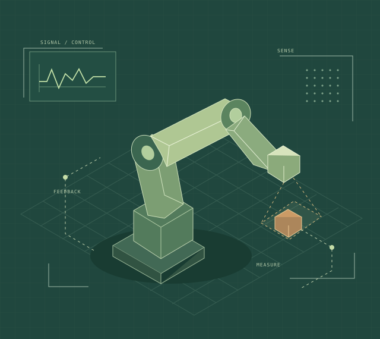

WELCOME, I’M DAVID TORCK
From first principles
to working systems.
Mechatronics. Controls. Instrumentation.
I connect mechanical design, electronics, and control systems to solve practical engineering problems.

Curiosity is the start.
Engineering is the follow-through.
My work spans propulsion controls, nuclear instrumentation, robotic inspection, and optical imaging. I enjoy the point where a model becomes hardware—and where testing reveals what to improve.
I hold a bachelor’s degree in Multidisciplinary Engineering Technology with a Mechatronics Track from Texas A&M University and am completing a master’s in Engineering Technology focused on electro-mechanical control systems.
Explore my backgroundA closer look at the work.
The problems, my contributions, and the tools behind each project.
Project visuals are concept illustrations. They are not photographs of the actual hardware.
A multidisciplinary
foundation.
Experience in engineering environments, supported by hands-on research, teaching, and technical leadership.
Read the full résuméM.S. Engineering Technology
Electro-Mechanical Control Systems
Expected December 2026
B.S. Multidisciplinary Engineering Technology
Mechatronics Track
December 2024
Nuclear Security Certification
Expected December 2026
MAY – AUG 2025Thrust Vector Control InternAmentum · NASA Marshall Space Flight Center
Integrated an active inertial loading simulator into a thrust vector control test architecture. Combined MATLAB modeling with LabVIEW data acquisition and hardware-in-the-loop control.
NOV 2023 – AUG 2024Bio-photonic Robotics InternTexas A&M University
Developed robotic positioning and acquisition for Raman spectroscopy across 96 corn stalks in a controlled greenhouse. Collected and analyzed spectroscopic measurement data.
MAY – AUG 2023Instrumentation & Control Electronics InternParagon Energy Solutions
Analyzed and tested instrumentation and logic-control systems for the nuclear industry. Applied schematic interpretation, logic analysis, soldering, and drafting to testing equipment for multivariable logic boards.
2025 – PRESENTElectronic Instrumentation LaboratoryTexas A&M University · Teaching assistant
Prepare analog electronics laboratory systems and guide instrumentation experiments. Support students through practical troubleshooting, clear explanations, and individual mentorship.
JAN 2022 – DEC 2024Engineering Student LeadershipSociety of Mechatronics Engineering Technology
Served as president, treasurer, and science team lead. Coordinated engineering events and project schedules, worked with industry sponsors and mentors, and managed organizational finances.
Tools to connect the dots.
Across software, electronics, mechanical design, and measurement.
Model & control
MATLAB · Simulink · LabVIEW
Dynamic modeling · Data acquisition
Design & build
SolidWorks · Fusion 360 · AutoCAD
Schematic interpretation · Soldering
Automate & inspect
C++ · Universal Robots · PolyScope
HandySCAN · VXmodel · VXinspect
LET’S TALK ENGINEERING.
Have a problem
worth working on?
I’m interested in opportunities in controls, instrumentation, robotics, and systems engineering.